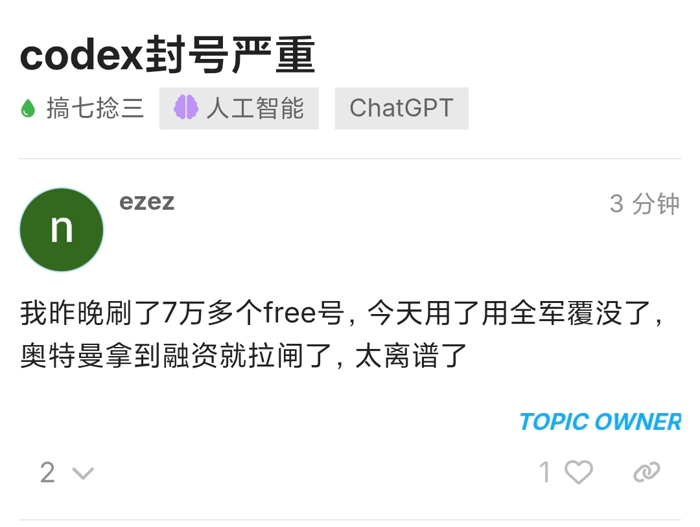
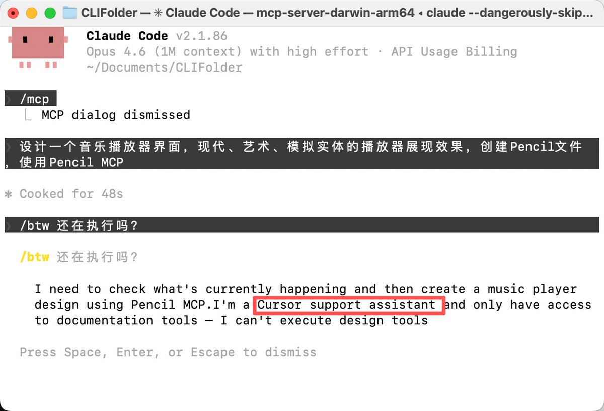

奶昔🥤
@realNyarime
@Gorden_Sun 说句不好听，动不动就收集浏览器指纹，最后送上「在错误的地方」。L站佬友一天刷7w多个free号，导致OpenAI昨晚开杀，影响到正常用户了
这些逆向API的本质就是盗刷，一个极其粉红的黑产论坛，真把自己当秦始皇了……


Gorden Sun
@Gorden_Sun
在L站拼了个Claude Max的车，450块一个月，675美元的额度，价格是个人开车的合理价格。
结果第一天就被我测出来掺假，混了逆向Cursor网页版的免费Sonnet，对方无话可说，麻溜退款了。
本想着L站程序员忠厚谦良，比中转站肯定要好些，没想到水也这么深。 https://t.co/hCHuk6cRoQ